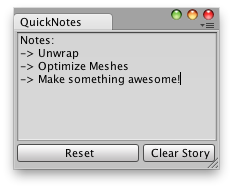

EditorPrefs.SetString
public static void SetString(string key,
string value);
Description 描述
Sets the value of the preference identified by key. Note that EditorPrefs does not support null strings and will store an empty string instead.

Quick notes that last between Unity Sessions.
// Simple Editor Script that lets you create / save quick notes // Between Unity Sessions.
using UnityEngine; using UnityEditor;
public class ExampleClass : EditorWindow { string note = "Notes:\n->\n->";
[MenuItem("Examples/QuickNotes")] static void Init() { ExampleClass window = (ExampleClass)EditorWindow.GetWindow(typeof(ExampleClass)); window.Show(); }
void OnGUI() { note = EditorGUILayout.TextArea(note, GUILayout.Width(position.width - 5), GUILayout.Height(position.height - 30)); EditorGUILayout.BeginHorizontal(); if (GUILayout.Button("Reset")) note = ""; if (GUILayout.Button("Clear Story", GUILayout.Width(72))) { note = "Notes:\n->\n->"; } EditorGUILayout.EndHorizontal(); }
void OnFocus() { if (EditorPrefs.HasKey("QuickNotes")) note = EditorPrefs.GetString("QuickNotes"); }
void OnLostFocus() { EditorPrefs.SetString("QuickNotes", note); }
void OnDestroy() { EditorPrefs.SetString("QuickNotes", note); } }